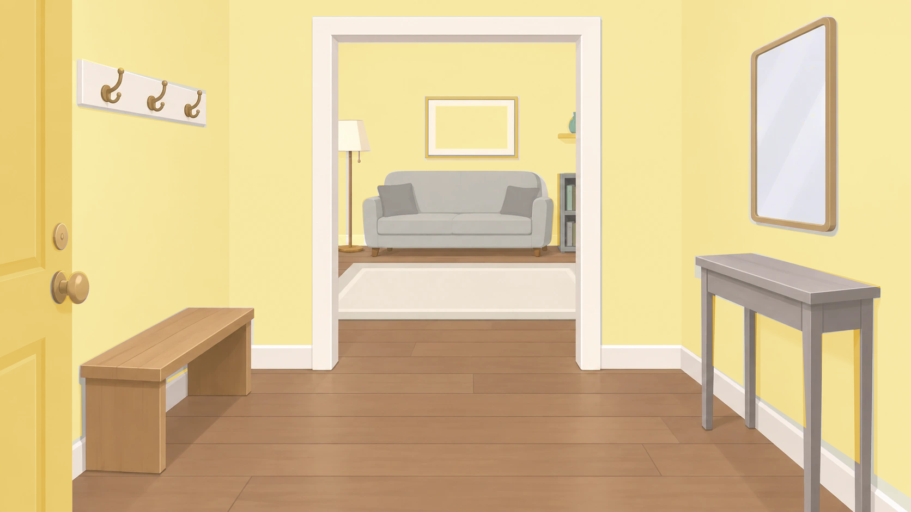
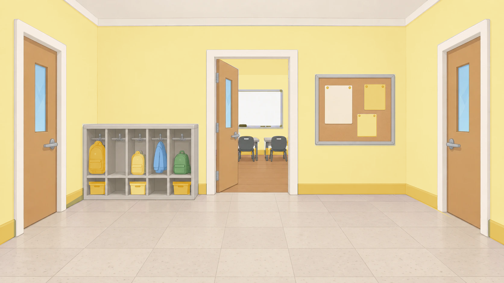
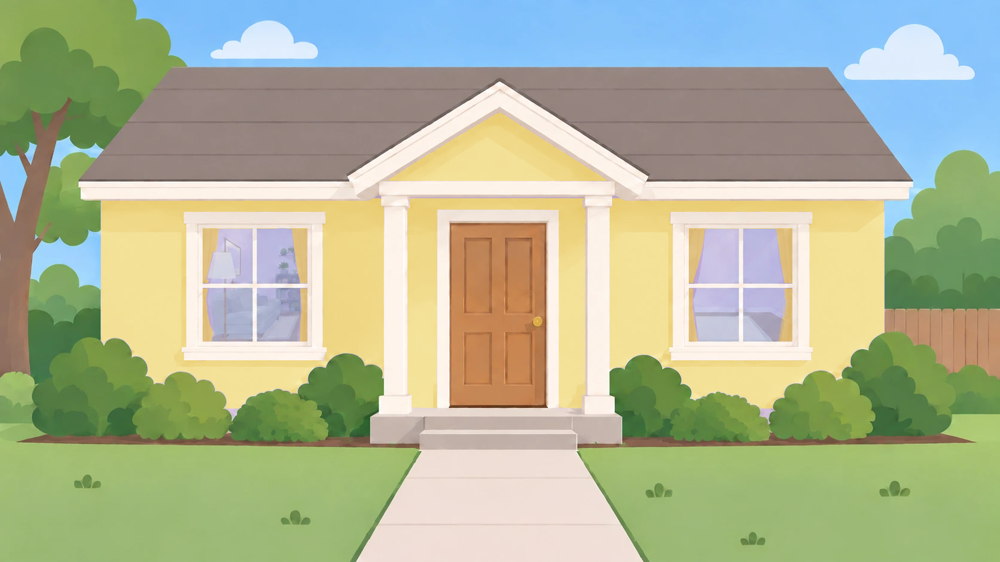
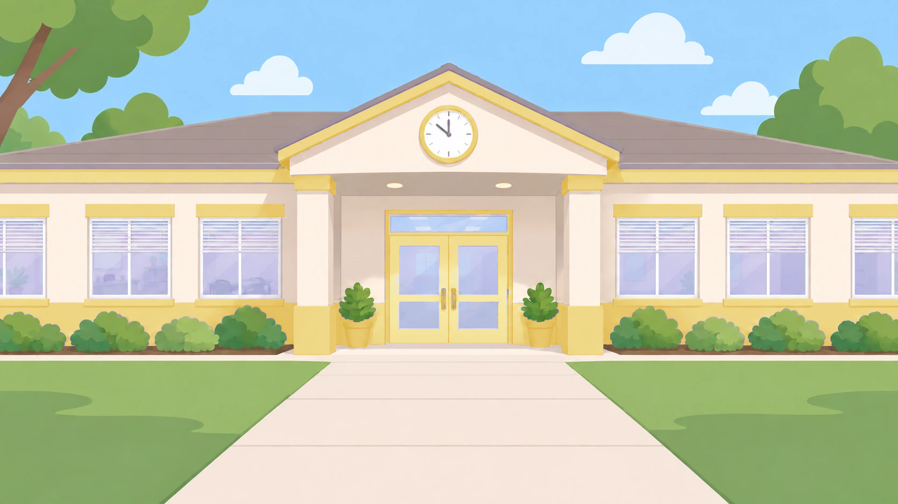

Yellow rooms and hallways
The yellow set keeps warm yellow walls and gold accents, with neutral blinds, whiteboard frames, furniture and clear mirror glass. These are the full backgrounds, without characters covering their edges. Open all 48 study previews · Compare character colors.
Oh look! Here is a house.

Oh look! Here is a school.

This is a room inside the house.

This is a room inside the school.

Oh look! Here is a house.

Oh look! Here is a school.
